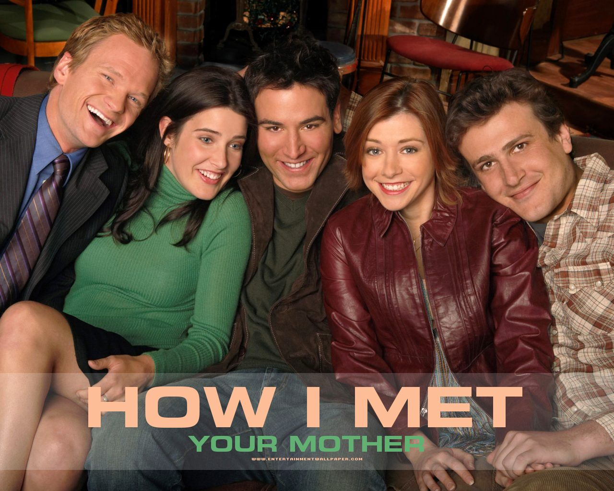
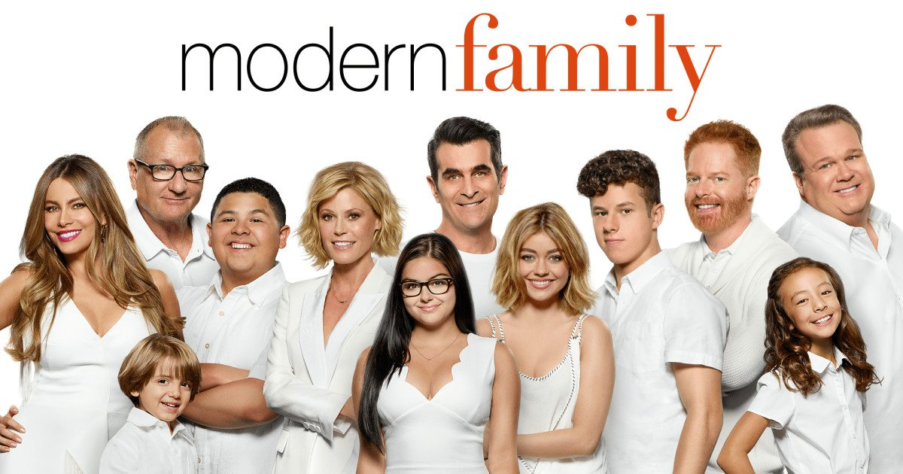

How I Met Your Mother

- GÉNERO: COMEDIA
- DURACIÓN: 9 SEASONS
- SINOPSIS: "How I Met Your Mother" es una serie de comedia que sigue a Ted Mosby mientras cuenta a sus hijos cómo conoció a su madre en Nueva York. Junto a sus amigos, Ted vive aventuras amorosas y cómicas mientras busca al amor de su vida, todo narrado con saltos temporales y un toque de misterio sobre quién será la madre. La serie explora temas de amistad y relaciones.
- RATING: 4.8/5
- ESTRENO: 19 SEP 2005
Modern Family

- ESTRENO: 23 sep 2009
- GÉNERO: Comedia
- SINOPSIS:La serie narra la vida de Jay Pritchett y su familia, todos vecinos del mismo barrio a las afueras de Los Ángeles, y gira en torno a tres tipos de familia: nuclear, extendida y con padres del mismo sexo y está basada en situaciones cómicas que podrían ocurrirle a cualquiera en la vida real.
- RATING:4.9/5
- DURACIÓN: 11 temporadas
Phineas y Ferb

- ESTRENO: 17 AGOSTO 2007
- DURACIÓN: 4 temporadas
- RATING: 4.8/5
- SINOPSIS: Phineas y Ferb son dos hermanastros que quieren disfrutar al máximo de las vacaciones de verano. No dejan de hacer trastadas y de inventar instrumentos imposibles como un monopatín gigante para sufrimiento de su hermana mayor Candice, que no les aguanta.
- GÉNERO: Infantil/ Animacion/Fantasia
Gossip Girl

- ESTRENO: SEP 18 2007
- RATING: 4.9/5
- GÉNERO: DRAMA-ROMANCE
- DURACIÓN: 6 SEASONS
- SINOPSIS: "Gossip Girl" es un drama adolescente que sigue la vida de jóvenes adinerados en la alta sociedad de Nueva York. La trama se centra en un blog anónimo, también llamado "Gossip Girl", que revela los secretos y escándalos de estos jóvenes ricos. La serie sigue las relaciones complicadas, los conflictos y las intrigas de un grupo de amigos mientras intentan mantener sus vidas en secreto y a salvo de la implacable mirada de "Gossip Girl".
Pretty Little Liars
- ESTRENO: 21 MAR 2011
- GÉNERO: drama/misterio
- SINOPSIS:La serie sigue la vida de cuatro chicas y muy amigas de secundaria cuya amistad se desmorona después de la desaparición de su líder. Un año después, las amigas separadas se reúnen cuando comienzan a recibir mensajes de una misteriosa figura llamada «A» que amenaza con exponer sus secretos más personales.
- DURACIÓN: 7 temporadas
- RATING: 4.9/5
Friends

- ESTRENO: SEP 22 1994
- GÉNERO: comedia/romance
- RATING: 4.9/4
- DURACIÓN: 10 temporadas
- SINOPSIS: Esta comedia televisiva sigue las aventuras y desventuras en el trabajo, el amor y la vida de seis amigos veinteañeros que viven en Manhattan durante los noventa. Ve todo lo que quieras. Serie de éxito mundial que sobrevivió diez temporadas en el aire y obtuvo numerosos premios.
Brooklyn 99

- ESTRENO: 17 SEP 2013
- RATING: 4.9/5
- DURACIÓN: 8 SEASONS
- GÉNERO: COMEDIA
- SINOPSIS: "Brooklyn Nine-Nine" es una comedia de situación que se desarrolla en el ficticio 99º distrito policial de Nueva York. La serie sigue las cómicas desventuras y situaciones absurdas de un grupo de detectives y oficiales de policía, encabezados por el inmaduro pero talentoso detective Jake Peralta (interpretado por Andy Samberg) y el serio pero carismático capitán Raymond Holt (interpretado por Andre Braugher). La serie se centra en el equilibrio entre la resolución de casos criminales y las relaciones personales y dinámicas dentro del departamento.
YOU

- ESTRENO: 9 SEP 2018
- RATING: 4.5/5
- GÉNERO: Thriller psicológico
- DURACIÓN: 4 temporadas
- Sinopsis: La sinopsis oficial dice lo siguiente: You es una historia de amor ambientada en el siglo XXI sobre un veinteañero obsesivo pero brillante que usa la híper conectividad que ofrece la tecnología moderna para hacer que la mujer de sus sueños se enamore de él.
Glee

- ESTRENO: 19 de mayo de 2009
- RATING: 4.9/5
- DURACIÓN: 6 temporadas
- GÉNERO: musical/comedia
- SINOPSIS: Se centra en el instituto William McKinley en Lima, Ohio, donde el profesor de español, Will Schuester, (Matthew Morrison) quiere devolver al club del coro "New Directions" el brillo y la popularidad que tenía cuando él era estudiante y formaba parte.